Множества чисел
- Натуральные() - 1, 2, 3...
- Целые() - ...-1, 0, 1...
- Рациональные() - результат деления целого числа на натуральное ...
- Вещественные() - рациональные и иррациональные. Иррациональные() - бесконечная непериодическая дробь
- Комплексные() - в составе которых есть
Ряды
Исчисляемый ряд
Исчисляемый ряд - это означает что вы можете отсчитать от любого числа до любого другого за конечное число времени, даже если ряд бесконечен
Например натуральные числа: 1, 2, 3... - исчисляемы Например целые числа: ...-1, 0, 1... - исчисляемы, ибо если их расположить в порядке типа: 0, 1, -1, 2, -2, 3, -3, 4, -4..., то все ок Например рациональные числа: 1/2, 2/1, 1/3... - исчисляемы, ибо построив таблчку, где номер строки - числитель, номер столбца - знаменатель и обойдя ее змейкой, получим: 1/1, 2/1, 1/2, 1/3, 2/2, 3/1, 4/1, 3/2, 2/3, 1/4... Такое множество исчилимо. Для отрицательных чисел все тоже самое. А объединение двух исчеслимых множеств => множество исчислимое, а значит рациональные числа исчисляемы
Неисчесляемый ряд
Неисчесляемый ряд - ряд количесвто элементов в котором равно числу вещественных чисел. То есть это буквально невозможно посчитать
Например от 0 до 1 - неисчисляемы
Теория меры
Я ничего в ней не понимаю, потому что там все в терминах топологии и вообще я туой. Если бы не интеграл Лебега вообще в это чудо бы не полез
Мера
Мера(Measure) - обобщение над понятиями длины, площади, объема и т.д. В вики вообще написано: Мера - числовая характеристика, "масса" множества, при некотором распределении массы по пространству
Примеры меры для разных множеств:
- Мера точи = 0
- Мера отрезка это
- Мера счетного множества равна 0. Ибо счетное множество соответствует натуральным числам, а они как бы состоят из "точек". А мера множества равна сумме мер элементов этого множества. А сумма бесконечного числа нулей это ноль
- Мера множество рациональных чисел это 0. Так как множество рациональных чисел счетно
- Мера множество иррационального отрезка это 1
Для умных:
Более строго, если есть пространство (физическое пространство), в котором выделено некоторое множество (объекты, например сфера) называемое измеримым, то мы можем задать функцию (та самая мера, которая в реальном мире - объем), которая:
- - функция возвращает положительные значения
- Все пространство является измеримым (это видимо что его в любом месте можно покрыт объектами... Короче я хз)
- Объединение, разность и пересечение любых мнжеста из , тоже принадлежит (а разве может быть по другому?)
- , для и не пересекающихся. Короче говоря, есть куб и шар, они не пересекаются, значит объем от объединных объектов равен сумме объемов каждого
- Ну и тоже что в предыдущем пункте но для более чем 1-ого объекта
В итоге оказвается, что для любого n-мерного пространства реальных чисел, существует только одна такая функция меры, чтобы мера стандартного "куба" со сторонами 1 в n-мерном пространстве была 1. И функция меры совпадает с функцией n-мерного Евклидового объема. Хуй знате как они это доказали и знать не хочу
Есть еще какая-то мера Хаусдорфа, критерий Каратеодори, Липшицивы функции, внешние меры и т.д. и т.п.
Интегралы
Интеграл Римана
Мы разбиваем функцию по оси абсцис. Делим на отрезки длиной . По каждому такому отрезку строим нижний(inf) и верхний(sup) прямоугольник. Строим суммы Дарбу, то есть:
- - сумма нижних(красных) прямоугольников
- - сумма верхних(синих) прямоугольников
Очевидно, что
Увеличивая число отрезков, то бишь уменьшая длину очевидно будет расти, а уменьшаться. И если существует такой предел для , что верхний интеграл равен нижнему, то функция интегриуема по Риману
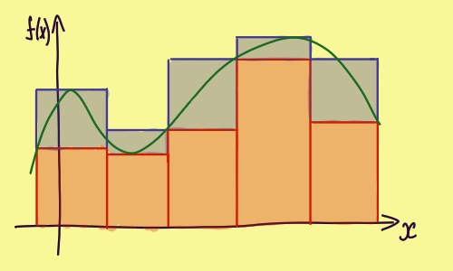 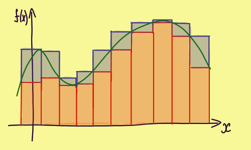 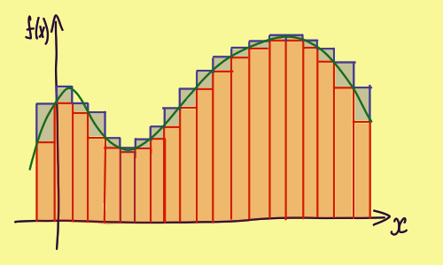
У интегрирования по Риману существуют проблемы:
- высокая размерность - то есть, если у нас для функции от 2-ух переменных число разбиений увеличивается квадратично, для 3-ех кубически и т.д.
- непрерывность - если есть разрыв то неясно, по нижнему или по верхнему прямоугольнику мы должны считать, и вообще они никак не сойдутся. Обычно начинают рассказывать про функцию которая равна 0 для рациональнх и 1 для иррацилнальных чисел. И если искать интеграл от нее, то как не дроби все отрезки должны будут принимать либо 1 либо 0, не сходится с , а значит нет интеграла
Интеграл Лебега
Интеграл Римана разбивает по обсцисе, то есть по переменной, а интеграл Лебега по ординате, то есть по значению
В интернете все приводят такой пример. Представьте что у вас есть мешок мелочи. А найти интеграл, это очевидно означает посчитать сколько у вас денег. И интеграл по Риману это прибавлять каждую монетку. А по лебегу, это разбить монети на кучки по номиналу, посчитать сколько в каждой кучке монеток, и перемножить с номиналом
 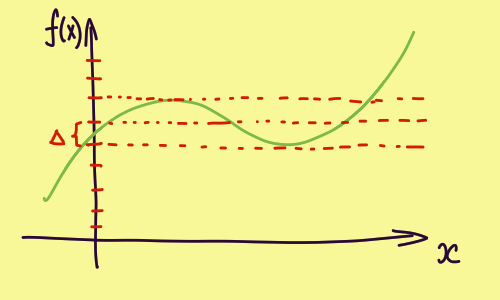
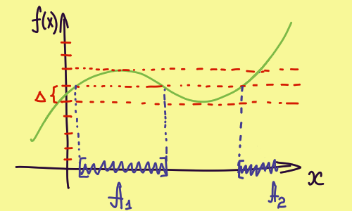
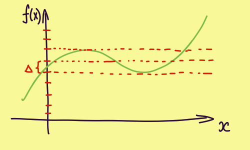
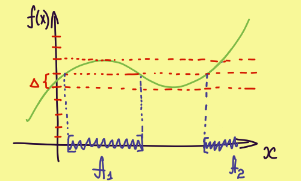
В интеграле Лебега есть важное понятие, мера, обозначется В данноим случае, если посмотришь на 3 рисунок, то длины отрезков , ... и будут мерой. Для 3d графиков это площадь, для 4d графиков это объем и т.д.
Математически мера записывается так: . То бишь эта штука, вернет длину от множества A
В итоге мы интегрируем значения функции перемноженные на меру. Записывается так:
Теория вероятности
Элементарные события
Обозначение:
Определение: Итак, у нас есть шестигранный кубик. Если его бросить то выпадет: 1, 2, 3, 4, 5 или 6. Множество этих значений называется элементарные события и обозначается
Случайная величина
Обозначение:
Определение: событие, связанное с появлением того или иного числа в ходе проведения эксперимента. Например, автомат с газировкой может работать(1) или не работать(0)
Дискретная и непрерывная величины
Дискретная - например числа на кубике
Непрерывная - растояния от центра до точки попдания при стрельбе по мешени
Плотность распределения вероятности
И так, если построить зависимости вероятности исхода от значения, например для кубика, то получится график слева. Чтобы посчитать вероятность, нужно просто рассчитать площадь. Например, вероятность того что выпадет 1 или 6 это:
Если например взять кубик 6 гранями и раздробить его до 12 гранного кубика, то получим пример на рисунке по центру. Правда грани пронумерованы промежуточными значениями, это для того чтобы перейти к примеру с непрерывно величиной
Если мы продолжить дробить грани до бесконечности, то получим 3 рисунок. Вот этот график и есть плотность распредления вероятностей. Обозначается , и если мы хоти найти вероятность попадания попадания случайной величины в диапозон от до , то просто надо нати площадь. Ну а как найти площадь? Правильно, взять интеграл от функции
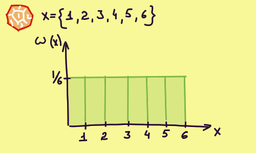 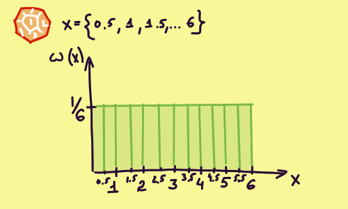 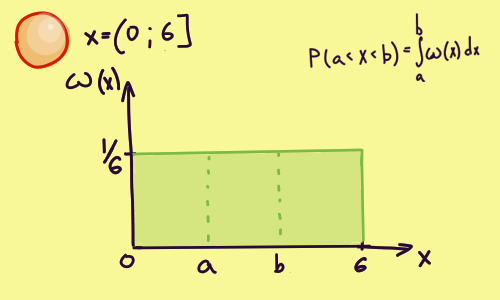
Особенности "плотности распределения веротности":
- Площадь под всем графиком равна 1
- График во всех точках должен быть больше или равен 1
Функция распредления случайной величины
Показывает вероятность того, что случайное события будет меньше значения
В общем, в чем прикол. "Функция распределния случайной величины" это интеграл для "Плотности распределения вероятности". И чтобы найти вероятность в диапозоне от до , необходимо
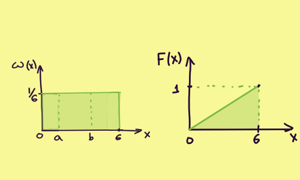
Особенности "функции распредления случайной величины":
- График во всех точках должен быть больше или равен 1
Условная вероятность
Обозначение:
Если сто пдуняк произошло событие , то вероятность того, что в этом случае произойдет событие A - условная вероятность
Итак, у нас для примера есть плотность распределения вероятности для несовместных . И есть событие , которое может произойтм совместно с каждым из них На втором рисунке как раз показано то, как эти вероятности совмещаются. Справа на рисунке формула, для условной вероятности
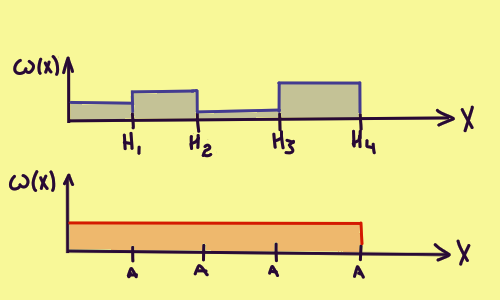 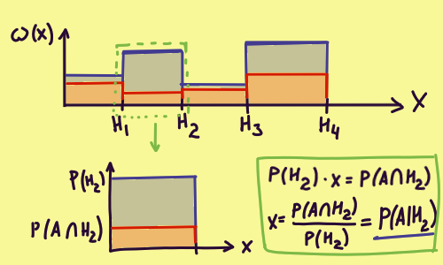
Где используется:
- В формуле Байеса. Больше не знаю где
Формула Байеса
Итак, как это формула получается?
- По формуле условной вероятости:
- Вспоминаем что пересечение двух множеств не зависит от порядка в котоором они пересекаются:
- Из формулы условной вероятости выражаем песечение двух множеств:
- Это называется формулой полной вероятности, но она полностью логична, так что все ок: P(A) = \sum P(A\bigcap H_i) = \sum P(A|H_i) \cdot P(H_i}
Пример:
Два стрелка независимо друг от друга стреляют по одной мишени. Каждый делает по выстрелу. Вероятность попадания первого - 0.8, второго - 0.4. После стрельбы обнаружена одна пробоина. Найти вероятность того, что пробоина пренадлежит 1 стрелку.
Дано:
| Событие | Описание события | ||
|---|---|---|---|
| оба НЕ попали | (1-0.8) * (1-0.4) = 0.12 | 0 | |
| 1 попал | 0.8 * (1-0.4) = 0.48 | 1 | |
| 2 попал | (1-0.8) * 0.4 = 0.08 | 1 | |
| оба попали | 0.8 * 0.4 = 0.32 | 0 |
Событие A - в мишене обнаружена пробоина. Гипотеза которую проверяем:
Решение:
Подставляем все в формулу Байеса:
Момент случайной величины
Момент случайной величины - понятие в матиматике аналог которого "момент" из физики. Связано с формой графика:
| В математике | Момент в физике | Момент случайной величины |
|---|---|---|
| 0 момент | Полная масса | - |
| 1 момент | Центр масс | Мат ожидание |
| 2 момент | Момент инерции | Дисперсия |
| 3 момент | - | Ассиметрия |
| 4 момент | - | Эксцесс |
Математическое ожидание
Обозначение:
Определение: Математическое ожидание - понятие, означающее среднее взешанное по вероятности возможных значений случайной величины
Формула для дискретного ряда:
Формула для непрерывного ряда через плотность распределния: , где - плотность распредления
Пример:
В качестве примера для дальнейших вычислений возьмем ряд:
| X | P |
|---|---|
| 3 | 0.2 |
| 4 | 0.4 |
| 5 | 0.4 |
Подставляем значения в формулу:
Свойства мат ожиданир:
- , где - число
Дисперсия
Обозначение: или
Определение: мера разброса величины относительно математического ожидания. Переводится греческого - разброс
Формула:
Почему формула такая:
Первая формула:
- Итак, очевидно что рассматривая отклонения от математического ожидания мы будем:
- Проблема в том что положительные колебания перекрывают отрицательные, поэтому нужно взять по модулю... Но по техническим причинам берут квадрат, поэтому
- Значений x в множестве X много, поэтому их надо усреднить. А что в теории вероятности отвечает за усреднение? Правильно, математическое ожидание, итого:
Вторая формула:
Коэффициент ассиметрии
Обозначение:
Определение: характеризует ассиметрию распределения величины. Если отрицателен, то графие отклоняется в лево, если положителен то граик отклоняется вправо
Формула:
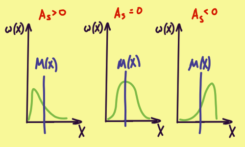
Коэффициент эксцесса
Обозначение:
Определение: характеризует остроту пика на графике распрелеоения. Коэффициент -3 введен, чтобы эксцесс для нормального распределния был 0. Значение больше 0 - острый пик, меньше 0 - гладкий пик
Формула:
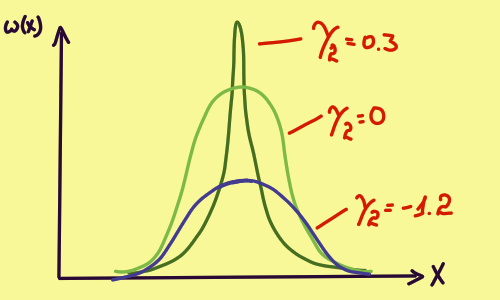
Случайные события
Обозначение: (в вики не такое, но у меня нет нужного шрифта)
Определение: Множество всех подмножест . Говоря по простому, все возможные наборы элементарных событий
Следствие: Случйное событие - элемент подмножества , который в свою очередь является подмножеством ... Ну ты понял...
Не понял: в определении используется "сигма-алгебра", но я тупой и не понимаю что это :(
Вероятностная мера
Обозначение: P
Определение: Вероятностная мера случайного события или по-человечески вероятность
Свойтсва:
- вероятность всех элементарных событий единица
Не понял: в определении используется "счетно-аддиивная мера", которая следует из "сигма-алгебры", но я тупой и не понимаю что это :(
Ряд распределения
В качестве примера для дальнейших вычислений возьмем ряд:
| X | P |
|---|---|
| 3 | 0.2 |
| 4 | |
| 5 | 0.4 |
где:
- X - величина
- p - вероятность того, что случится X
- - неизвестная вероятность
Ищем неизвестную вероятность
Сумма всех вероятностей это 100%. Ибо должно произойти хоть что-то:
Для нашего случая:
А значит равно:
Математическое ожидание
Математическое ожидание - нечто вроде среднего значения, которое мы получим бесконечно проводя наш эксперимет